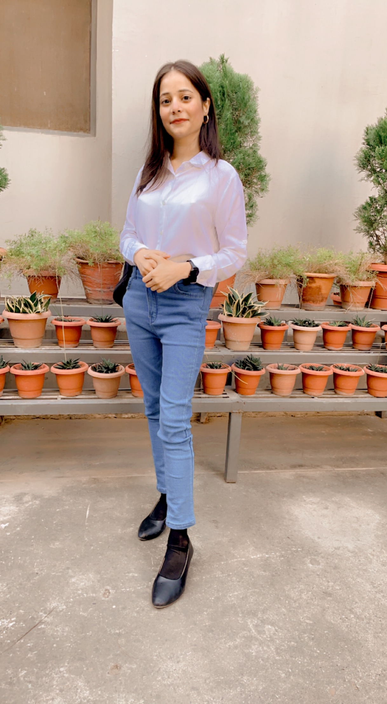

Hi,my name is Lavanya Ahuja.
I am from cse-aiml department.
As far as my personal details in regarding to the domain, i am currently doing my internship from IIT Bhubaneswar in collabration with 15+ companies. I have also parcticipated in hackathon event that was held online on 8th and 9th of September.
I am currently working on my minor project in Data Analytics.
I also managed several events such as genero,was a part of the event of geeks and geeks, took many coding related sessions based on API etc.
I was studying JAVA since four years, have a descent command on HTML, learning advance css and js,also interested in learning KOTLIN for android web development.
CONTACT NO. - 9119875490
CONTACT NO. - 9119875490
